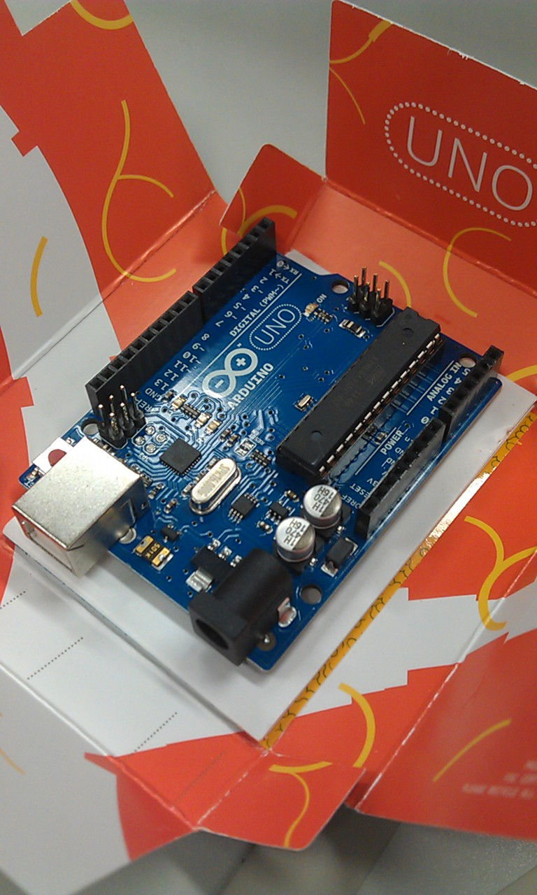

5月の記録
Table of Contents
1 1日
2 2日
3 3日
4 4日
- すばひびをOpenSUSEのwineで起動したらこうなった

5 5日
今日は土曜日． 祝日こどもの日である． 今日子作りをすると，2月–3月辺りに子供がうまれるらしい． 十月十日だと3月10日くらい．
- アパートに引きこもっていると，現在の昼夜逆転体質の改善は難しいと考え，陽に当たるため大学の行った．
- 14:00くらいまでは意識があったが，その後デスクの上で寝てしまい気づいたら21:00だった．
- 勉強をそこそこしたら，髪を切って，Optimus Padのカバーを買い，温泉に行こうと考えていたが，全部ダメだった．
- 泣きたい．
- 居眠り中の夢の内容も絶対に高得点をとらないといけないTOEICで，まったく結果を出せず，泣きそうになっているものだった．もう駄目ぽよ．
6 6日
6.1 CPUの比較 http://www.cpubenchmark.net/
6.2 ps2pdf(日本語)が文字化ける
- http://d.hatena.ne.jp/khiker/20080329/ghostscript
- http://d.hatena.ne.jp/Askeladd/20120227#1330348265
- http://www.muskmelon.jp/?page_id=75
# Ghostscriptのパス(日本語に対応) export PATH=/Applications/Ghostscript.app:/Applications/Ghostscript.app/bin:$PATH
パス通したら文字化けせずにpdfできたよやっほい
6.3 秋月のDAC
- これ欲しい，次秋葉原行ったら必ず買おう http://akizukidenshi.com/catalog/g/gK-05369/
7 9日
8 10日
8.1 Firefoxのロケーションバーにスキーム名を表示
http://mozilla-remix.seesaa.net/article/227679129.html
about:configでbrowser.urlbar.trimURLsの値をfalseにする．
なお、httpの後のダブルスラッシュ //の2文字は有意義に使われる機会が少ない。2009年10月、URLの提案者であるティム・バーナーズ=リーは「できることなら取り除きたい」と発言している。
8.2 Arduino届いたぞよ

8.3 H8マイコン